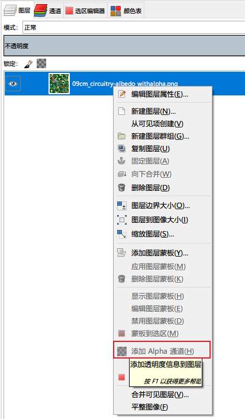

ArtTools
Table of Contents
记录一些美术工具的使用方法。
<!– more –>
photoshop
基本操作
查看参考线坐标信息
打开标尺线(Ctrl+r)，查看参考线和标尺交点的值。
GIMP
添加 Alpha 通道
右键点击图层，选择添加 Alpha 通道

填充 Alpha 通道
- 选择要填充的区域
- 右键点击图层，选择 Add Layer Mask, 弹框中选择 Layer's alpha channel
- 使用 Bucket Fill Tool 进行填充
- 右键点击图层，选择 Apply Layer Mask
3ds max
基本操作
| 快捷键 | 功能 |
|---|---|
| 按下鼠标滚轮拖动 | 拖动视图 |
| Alt+按下鼠标滚轮拖动 | 旋转视图 |
| Alt+w | 最大化、最小化视图切换 |
| z | 重置视角, 也可以点击右上角方向指示图标，再点击图标左上位置的小图标 |
| g | 显示、隐藏场景中网格线 |
| h | 按名称选择物体 |
| l t f u p | 左-顶-前-正交-透视视图切换 |
| F3 | 线框模式显示切换 |
| F4 | EdgedFaces 模式显示切换 |
| 按下 Shift 移动选中物体 | 复制选中物体 |
| Shift +g | 隐藏几何体，只显示骨骼 |
显示 Scene Explorer
方法 1：Main toolbar > Toggle Scene Explorer
方法 2：Menu bar > Tool Menu > Scene Explorer
查看模型使用的材质球
菜单 Rendering/Material Explorer
查看骨骼层级结构
方法 1：Main toolbar > Schematic View
方法 2：Menu bar > Graph Editors menu > New Schematic View
查看修改顶点颜色
ModifierList / VertexPaint
按照顶点颜色显示模型
- Step1 Display / Display Properties/ Vertex Colors
- Step2 Display / Display Color/ Shaded - Object Color
- Step3 场景显示模式切换为 Shaded
如何查看骨骼的绑定权重？
查看权重分布
- Step0 选中蒙皮的模型
- Step1 选中 Modify 选项卡
- Step2 在 Modify Stack 中展开 Skin,选中 Envelope
- Step3 在 Parameters 中的 Bones 列表中选择需要查看的骨骼
建模
Q&A
如何创建一个地球模型，并赋予贴图？
TODO 一个角色如何使用多个材质球？
如何查看模型的 UV 展开?
- 选中模型
- 选中修改选项卡 （Modify）
- 在 Modify List 中选择 Unwrap UVW
- 在 EditUVs 选项组中，点击 Open UV Editor
动画
基础知识
| 关键帧类型 | 颜色 | 功能 |
|---|---|---|
| Planted Key (踩踏/固定关键帧) | 橙色 | 站军姿 等动作，为保持一动不动时使用 |
| Sliding Key(滑动关键点) | 黄色 | 走路、跑步等运动中任何一直接触地面的部位都用滑动关键帧 |
| Free Key(自由关键帧) | 黑色 | 运动中不会一直接触地面的部位都用自由关键帧 |
骨骼绑定步骤
分析模型
性别 女
个性 豪放
职业 坦克(肉盾) 保护队友 控制
形体 人形 两足(无残缺)
分析模型需要活动的部位和道具
CS 人形骨骼自带
手
脚
头
躯干
Bones 骨骼
盾牌
武器
头发
飘带(衣服的裙摆)
骨骼配置
- 确定骨骼重心 与模型重心吻合
- 配置腰或者腿骨骼 让骨骼关节和模型关节吻合
- 根据模型布线来确定躯干
- 确定肩 骨骼肩膀末端（靠近胸的一端）的旋转点要在模型锁骨位置，前端与模型大臂相吻合
- 配置手臂，手，手指
- 配置头
MaxScript
基础语法
if
-- if if a<b do ( -- ... ) -- if then else if a<b then ( -- ... ) else ( -- ... )
for 循环
方式一
for i= 1 to tagInfoArr.count do
(
local tagID = GetIDByName tagInfoArr[i].name
if tagID==-1 do
(
tagID = FrameTagManager.CreateNewTag tagInfoArr[i].name 0
)
tagInfoArr[i].id = tagID
)
方式二
for i in 1 to tagInfoArr.count by 2 do
(
local startTime = FrameTagManager.GetTimeByID tagInfoArr[i].id
local endTime = FrameTagManager.GetTimeByID tagInfoArr[i+1].id
local dur = endTime - startTime
format "i=% dur=%\n" i dur
if dur>0 do
(
configStr = "\n"
continue
)
)
string
-- 字符串转 float "12.1" as float -- 字符串替换 substituteString srcStr oldStr newStr local csvFileName = substituteString maxFileName ".max" ".csv" -- 字符串查找 local tmpIdx = findString tagName endTagNameSuffix return tmpIdx!=undefined
数组
-- 定义数组
a = #(1,2,3,4)
-- 数组连接
join a #(5,6,7,8)
-- 打印数组元素个数
print a.count
-- 数组排序
fn CompareFunc lhs rhs =
(
case of
(
(lhs.startTime < rhs.startTime):-1
(lhs.startTime > rhs.startTime):1
default:0
)
)
qsort tagInfoArr CompareFunc
结构体
-- 定义结构体 person Struct person (name, height, age, sex) -- 定义结构体实例 Bill = person name:"Bill" height:72 age:34 sex:#male Joe = person name:"Joseph" sex:#male -- 封装方法 struct myGlobals ( myVar1 = undefined, myVar2 = undefined, myVar3 = undefined, mytext = undefined, fn run filename = ( mytext = "I'm yours, master!" filein filename ) ) global myInstance = myGlobals() myInstance.run "slave.ms"
各种功能
文件操作
-- 打开 csv 文件 filePath = getOpenFileName types:"Excel(*.csv)|*.csv|"
https://knowledge.autodesk.com/search-result/caas/CloudHelp/cloudhelp/2017/ENU/MAXScript-Help/files/GUID-D4B43A33-8342-4BC9-80AB-91460861D37C-htm.html
https://www.vfxarabia.co/read-external-text-file
和 3dsmax 系统界面交互
读写配置文件
fn SetBoolINISetting key value=
(
-- print ("--" + value)
setINISetting hdxINIFile hdxINISection key value
),
fn GetBoolINISetting key=
(
local value = getINISetting hdxINIFile hdxINISection key
-- print ("--" + value)
return value=="true"
),
遍历
Tips
print 比较诡异
print "hello ->" + "world"
-- output: 输出两次
-- "hello ->"
-- "hello ->world"
print("hello ->" + "world")
-- output: 输出两次
-- "hello ->world"
-- "hello ->world"
maxscript 变量不分大小写
-- 下面会重名 local tmpIdx = 1 local TmpIdx = 2
删除老的 macroscript
删除#userScripts 目录下的脚本即可。
#userScripts 的值为 "C:\Users\<UserName>\AppData\Local\Autodesk\3dsMax\<ReleaseNumber> - 64bit\ENU\scripts"
https://knowledge.autodesk.com/search-result/caas/CloudHelp/cloudhelp/2015/ENU/MAXScript-Help/files/GUID-F7577416-051E-478C-BB5D-81243BAAC8EC-htm.html
maxscript –Type error: Call needs function or class, got:undefined
安装 maxscript 后，重启 3ds max，执行安装的脚本，报错：maxscript –Type error: Call needs function or class, got:undefined
解决方案：
将脚本放到 C:\Program Files\Autodesk\3ds Max 2014\stdplugs\stdscripts 目录下安装就可以了
– No ""eof"" function for undefined <<
打开文件时报如上错误。
解决方案：
查看被打开的文件是否被其他程序打开了，将其他程序关闭再执行。
Runtime error: Cannot directly set animation context time - use "at time…".
-- 不能直接设置 currentTime currentTime = 10 -- 需要使用 sliderTime sliderTime = 10
ERROR
参考资料
基础
- 3ds max9 自学教程 https://jingyan.baidu.com/season/45515
- 3ds max 制作简单动画 https://jingyan.baidu.com/article/91f5db1bcd438e1c7e05e370.html
- 3ds max 官方参考 https://www.autodesk.com/cn/3dsmax/2012help/index.html
- 3ds max 导出 fbx 到 unity http://www.cnblogs.com/wantnon/p/4564522.html
建模
- Zbrush-次时代 游戏角色建模 https://study.163.com/course/courseMain.htm?courseId=1002859005
- 次世代游戏角色模型制作 https://study.163.com/course/introduction.htm?courseId=910003#/courseDetail?tab=1
- 3D 游戏角色模型—将军制作流程 http://blog.sina.com.cn/s/blog_9f9269470101l0rd.html
动画
- 用电脑制作 3D 动画详细过程是怎样的? https://www.zhihu.com/question/31554729
- 茶壶动画制作 https://v.qq.com/x/cover/k4cc6kvbc7bi0qj/y1415xd6w3n.html
Blender
基本操作
| 快捷键 | 功能 | 分类 |
|---|---|---|
| 按下鼠标滚轮拖动 | 旋转视角 | 视窗 |
| Shift+按下鼠标滚轮拖动 | 拖动视角 | |
| 滚动鼠标滑轮 | 拉近拉远视角 | |
| 选择对称的点/线/面 | Select/Select Mirror | 选择 |
| Ctrl+ Mouse Right Click | Cut Node Link | Node Edit |
显示模型顶点属性值

可视化模型顶点属性
在 shading 中，按照如下方法修改 material，从而显示输入属性。

导入 FBX
File / Import 选择 FBX 文件
快速找到物体
在 SceneCollection Tree 中，选中物体，然后点击命令 View/Local View/Toggle Local View
切分物体 组合物体
切分物体： 进入 EditMode, 选择需要切分出去的面，右键菜单中选择 Separate / Selection, 就可以将选择的面从物体中分离出来。
组合物体： 进入 ObjectMode, 选择需要合并在一起的物体，右键菜单中选择 Join, 就可以将所有选中的物体合并在一起。
按照材质切分物体： 进入 EditMode, 右键菜单中选择 Separate / By Material
Select
选择模型上一圈边
Edtor Mode 下，选中一条边，Select / Select Loops/ Edge Loops
Normal
显示模型的 normal
- 切换到 EditMode
- Viewport Overlays 面板中进行设置

Mesh Seam Normal 不同
- 先将 LV02 LV03 两个分别 mesh copy 一份
- 将 Copy 出来的两个 Mesh Join 在一起得到 LV03-bak
- 进入 Edit Mode, Mesh/Merge/ByDistance, 此时接缝处的 normal 就是相同的了
- 使用 DataTransfer 将 LV03-bak 的 normal copy 给 LV02 和 LV03


UV
独立显示部分 UV
选中需要独立显示的 UV， UV Editor 中 UV 菜单下，Show-Hide Faces/Hide Unselected
缝合边
| 找出缝合边 | UV Editor View 中 | UV/Seams from Islands |
| 标记缝合边 | 3D Viewport 中 | 切换到边模式，选中边， UV/ Mark Seam |
| 清除缝合边 | 3D Viewport 中 | 切换到边模式，选中边， UV/ Clear Seam |
| 选中 Seam 边 | 3D Viewport 中 | 切到边模式，选中属于 Seam 的一条边，Select/SelectSimilar/Seam |
| 对边所属的面进行缝合 | UV Editor View 中 | 切到边模式，选中要缝合的一条边，UV/Stitch |
| 将 UV 缩放到画布大小 | UV Editor View 中 | 全选所有边，UV/Pack Islands |
调整 UV 顺序
选中顺序不正确的 UV，添加新 uv，然后，删除顺序不正确的 uv。
Copy UV 到另一个物体
Object Mode 下:
- 选择 Des 物体，选择要填充的 uv
- Ctrl 选择 Source 物体，选择要 copy 的 uv
- 在 Object 菜单中选择，Link/Transfer Data/Copy UV Maps
Unwrap UV to Square
- 将一个方向上所有边的最左，最右两个端点移动到对应的 UV Corner。
- 选中该方向的所有边

- UV/ Align/ Straighten Y, 将选中的 UV 边变为直线，移动选中边到 Y=0。
- Pivot 选择为 Median Point
- 缩放 UV 到 0-1 范围

- 右键菜单中选择 Spin
- 其他 3 个方向的边，做类似 1-6 步骤的处理
- 对模型重新 unwrap
https://blender.stackexchange.com/questions/41132/how-do-i-straighten-uv-maps
镜像 UV
- UV Editor 中, 选中所有 UV
- Pivot 选择为 Bounding Box Center
- 右键菜单中选择 Mirror X 或 Mirror Y